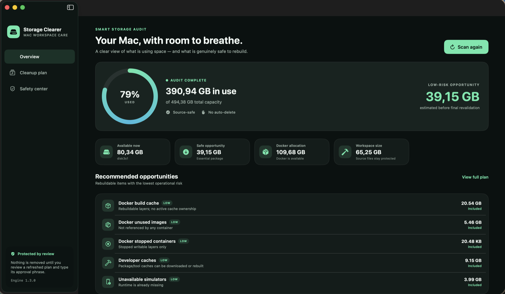
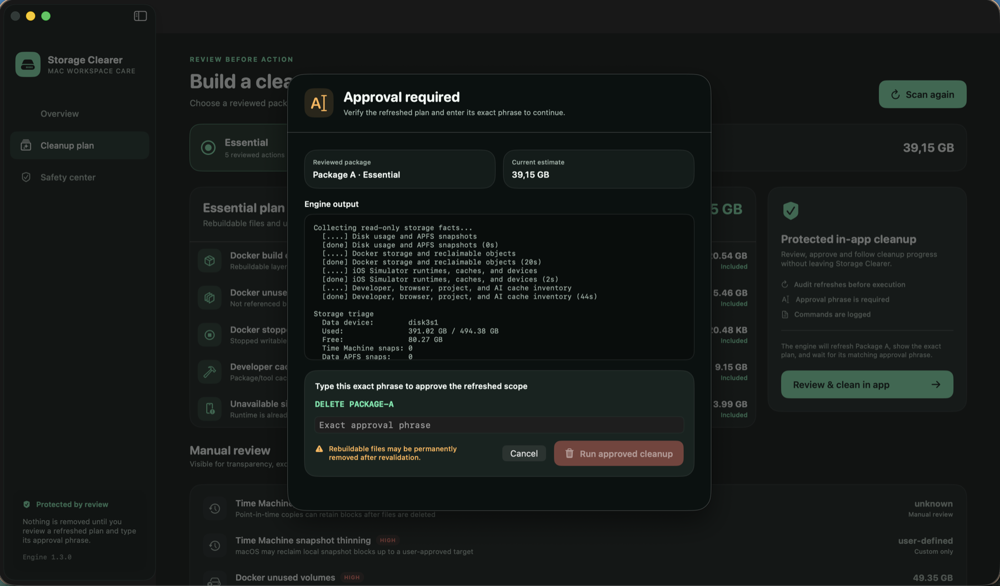

MACOS STORAGE FIELD GUIDE
Why Docker and Xcode make System Data grow.
The label is broad. The cleanup decision should not be. Here is a practical map of what developer tools keep on disk, what can usually be rebuilt, and what deserves an explicit boundary.

“System Data” is a report, not a cleanup plan.
Developer Macs accumulate data in places that Finder cannot summarize meaningfully: Docker’s virtualized storage, Simulator devices and runtimes, package-manager caches, build outputs, logs, and application support folders. macOS may group much of that footprint under System Data, but the label does not tell you whether an item is disposable, reproducible, or valuable.
A safer question is: what created these bytes, who still references them, and what happens if they disappear?
DOCKER
Cache and images are not the same as volumes.
Build cache
BuildKit layers speed up future builds. Unowned cache can usually be regenerated from Dockerfiles and source inputs.
Unused images
An image with no container reference can normally be pulled or rebuilt again, although doing so costs time and bandwidth.
Stopped containers
A stopped container may have a disposable writable layer, but its state should still be shown before removal.
Volumes
Volumes can contain databases and application state even when no container currently references them. “Unused” is not the same as “unimportant.”
Boundary: Storage Clearer keeps Docker volumes outside its reviewed packages. Reclaiming more bytes is not worth guessing about persistent data.
XCODE SIMULATOR
Devices depend on runtimes.
A Simulator device is created against an installed runtime. When that runtime is removed, the remaining device can become unavailable. Those unavailable devices are useful cleanup candidates because the dependency required to boot them is already missing.
Installed runtimes are different: they may be large, but deleting one changes which OS versions you can test. That is a product decision, not background housekeeping. A cleanup interface should distinguish an unavailable device from an installed runtime and show the exact target immediately before execution.
CACHES AND PROJECTS
Rebuildable does not mean consequence-free.
Package and tool caches can usually be downloaded or rebuilt. Generated folders such as dependency trees and build outputs may also be reproducible, but they live close to source work and can be expensive to restore. A trustworthy default keeps source projects out of automatic plans and makes broader workspace cleanup a manual review.
- Good default candidates: unowned Docker build cache, unreferenced images, stopped containers, known developer caches, and unavailable Simulator devices.
- Manual review: generated project folders, browser models/site data, AI application caches, and installed Simulator runtimes.
- Always protected: source projects, Docker volumes, personal data, browser profiles, restore points, and task/session history.
A SAFER EXECUTION MODEL
Audit, approve, revalidate, record.
- 01
Audit
Collect facts without changing the machine.
- 02
Approve
Show the refreshed scope and require its exact approval phrase.
- 03
Revalidate
Check changing Docker and Simulator targets again immediately before execution.
- 04
Record
Write every cleanup command to a local timestamped log.

OPEN-SOURCE PREVIEW
Inspect the plan before you trust the cleanup.
Storage Clearer is an Apple silicon preview for macOS 13 or later. The current build is unsigned, so first launch requires Control-click → Open.